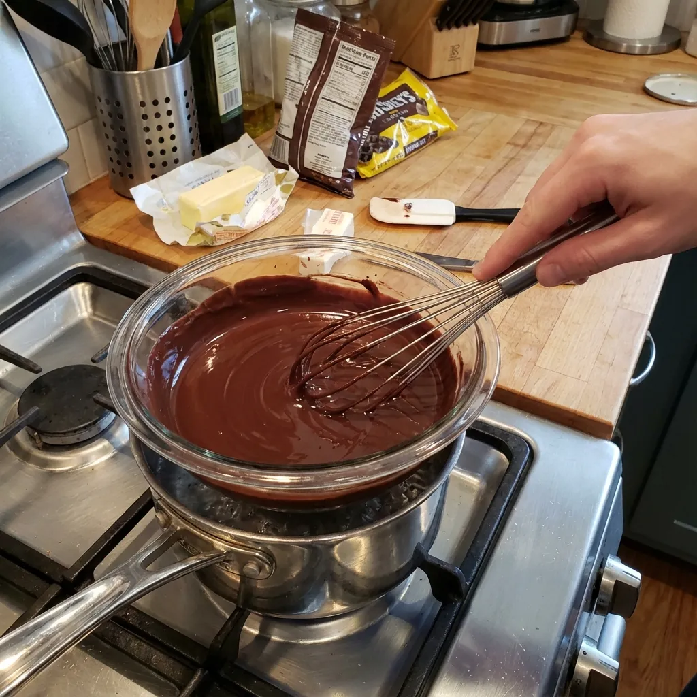

Recetas Saludables con Chocolates y Almendras: Placer Nutritivo y Consciente
Los chocolates con almendras son la combinación perfecta entre indulgencia y nutrición cuando se preparan con chocolate oscuro de calidad (mínimo 70% cacao) y almendras naturales. Esta receta transforma un simple capricho en un superalimento cargado de antioxidantes, grasas saludables y minerales esenciales, ofreciendo una alternativa consciente a los dulces procesados tradicionales.

📊 Datos Generales
⏱️ Tiempo de Preparación: 15 minutos
🔥 Cocción: 15 minutos (tostado almendras)
⏰ Total: 30 minutos
🍽️ Porciones: 4 personas
📈 Calorías: 220 kcal por porción | Proteína 15g | Carbohidratos 18g | Grasas saludables 10g
🍫 Ingredientes
- 200g de chocolate oscuro (85% cacao), picado
- 1½ tazas de almendras enteras crudas (200g)
- 1 cucharadita de aceite de coco
- 1 cucharadita de extracto de vainilla
- Pizca de sal marina en escamas
- 1 cucharadita de canela molida (opcional)
- ¼ cucharadita de cayena o gochugaru (opcional, para versión picante)

👨🍳 Preparación Paso a Paso
- Tostar almendras: Precalienta el horno a 160°C. Extiende las almendras en una bandeja forrada con papel de hornear. Tuesta durante 12-15 minutos, removiendo a mitad del tiempo, hasta que estén doradas y fragantes. Deja enfriar completamente.
- Derretir chocolate: Mientras las almendras se enfrían, derrite el chocolate oscuro picado al baño maría. Coloca un recipiente resistente al calor sobre una olla con agua hirviendo a fuego lento (sin que el agua toque el recipiente). Remueve constantemente hasta que el chocolate esté completamente derretido y liso.
- Incorporar saborizantes: Retira el chocolate del calor. Añade el aceite de coco, extracto de vainilla y especias si las usas (canela y/o gochugaru). Mezcla bien hasta integrar completamente.
- Combinar con almendras: Agrega las almendras tostadas al chocolate derretido. Remueve suavemente con una espátula hasta que todas las almendras estén completamente cubiertas de chocolate.
- Formar clusters: Con una cuchara, forma montoncitos de aproximadamente 3-4 almendras cubiertas en una bandeja forrada con papel encerado o silicona. Deja espacio entre cada cluster.
- Decorar: Espolvorea una pizca de sal marina en escamas sobre cada cluster mientras el chocolate aún está tibio. Esto potencia el sabor del chocolate.
- Enfriar: Refrigera durante 30-40 minutos hasta que el chocolate endurezca completamente.
- Conservar: Guarda en un recipiente hermético en el refrigerador hasta por 3 semanas, o congela hasta 3 meses.
💪 Información Nutricional Destacada
Esta combinación crea un superalimento nutricional con múltiples beneficios:
- Chocolate oscuro (85% cacao): Rico en flavonoides antioxidantes que mejoran la salud cardiovascular, reducen la presión arterial y mejoran el flujo sanguíneo cerebral [1]
- Almendras: Aportan proteína, vitamina E y grasas saludables que benefician la salud cardiovascular y el microbioma intestinal, además de apoyar la función cognitiva en adultos [2, 3]
- Sinergia nutricional: Los antioxidantes del cacao potencian la absorción de vitamina E de las almendras, maximizando beneficios
- Saciedad prolongada: La combinación de fibra (4g), proteína y grasas saludables reduce antojos de azúcar durante 3-4 horas [4]
- Bajo índice glucémico: No provoca picos de azúcar en sangre, ideal para diabéticos y control de peso
- Minerales esenciales: Rico en hierro, zinc, cobre y manganeso para sistema inmune y producción de energía
- Mejora del estado de ánimo: El chocolate estimula la liberación de endorfinas y contiene triptófano, precursor de serotonina
✨ Tips y Variaciones
- Chocolate con leche saludable: Si el 85% cacao es muy amargo, usa chocolate 70-75% que mantiene buenos antioxidantes pero con sabor más suave
- Almendras con piel vs sin piel: Las almendras con piel aportan más antioxidantes y fibra; sin piel tienen aspecto más elegante
- Versión gourmet: Añade ralladura de naranja al chocolate derretido para un toque cítrico sofisticado, o usa mantequilla de cacahuate para variedad
- Templar el chocolate: Para acabado profesional brillante, templa el chocolate (derrítelo a 45°C, enfría a 27°C, recalienta a 31°C) antes de cubrir almendras
- Mix de frutos secos: Combina almendras con nueces pecanas, avellanas o pistachos para perfil nutricional más variado
- Boost de superalimentos: Espolvorea cacao nibs, semillas de cáñamo o goji berries sobre los clusters antes de que endurezcan
- Control de porciones: Prepara clusters individuales de 30g (3-4 almendras) para snacks perfectamente porcionados de 150 calorías
- Almacenamiento óptimo: Separa capas con papel encerado en el contenedor para evitar que se peguen. Si aparece "bloom" blanco (cristalización de grasas), no afecta sabor ni seguridad
- Momento ideal de consumo: Come 30-40 minutos antes del ejercicio para energía sostenida, o después como recuperación con magnesio natural de las almendras
Estos chocolates con almendras caseros eliminan azúcares refinados, aceites hidrogenados y aditivos artificiales presentes en opciones comerciales. Al controlar la calidad del chocolate y usar almendras frescas, creas un snack que satisface el antojo de dulce mientras nutre tu cuerpo con antioxidantes, proteínas y grasas esenciales.
Referencias Científicas
- Desideri G, et al. (2012). "Benefits in cognitive function, blood pressure, and insulin resistance through cocoa flavanol consumption in elderly subjects with mild cognitive impairment". Hypertension, 60(3):794-801. PubMed PMID: 22892813
- Singar S, et al. (2024). "The Effects of Almond Consumption on Cardiovascular Health and Gut Microbiome: A Comprehensive Review". Nutrients, 16(12):1964. PubMed PMID: 38931317
- Rakic JM, et al. (2023). "Effects of daily almond consumption for six months on cognitive measures in healthy middle-aged to older adults: a randomized control trial". Nutr Neurosci, 26(7):1-10. PubMed PMID: 33448906
- Tan SY, Mattes RD. (2013). "Appetitive, dietary and health effects of almonds consumed with meals or as snacks". Eur J Clin Nutr, 67(11):1205-14. PubMed PMID: 24084509
💚 Encuentra Chocolates con Almendras en Amazon
Descubre chocolate oscuro de calidad (85% cacao), almendras orgánicas crudas y otros ingredientes premium para tus recetas saludables.
Ver Productos en Amazon →